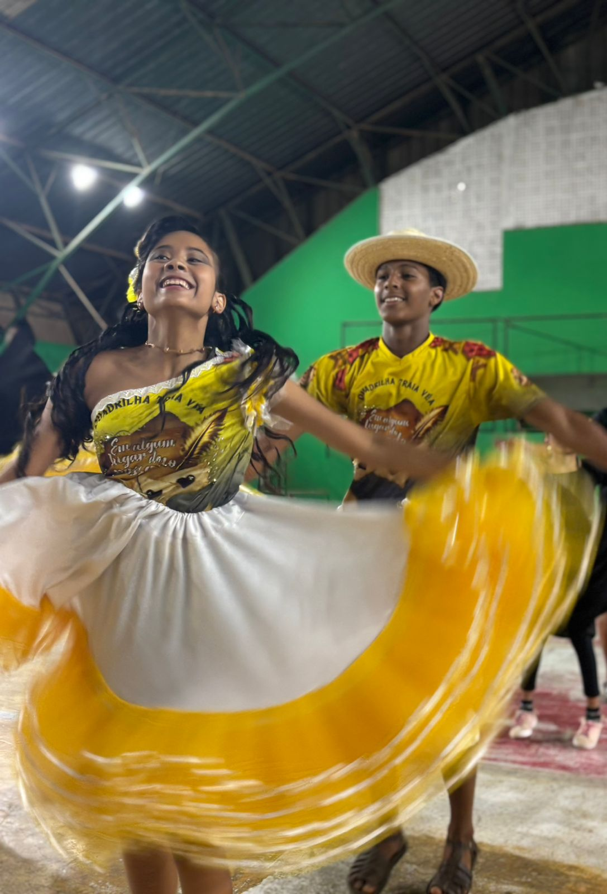

Traíra Véia
A Quadrilha Junina Traíra Véia é de Luziânia/GO e foi fundada em 2025. Filiada à LINQ-DFE, estreia no Circuito a partir de 2027.
SOBRE A QUADRILHA
A Quadrilha Junina Traíra Véia é de Luziânia/GO e foi fundada oficialmente em 28 de julho de 2025. A Traíra Véia nasceu da vontade de preservar as raízes do São João sem ficar parada no tempo. A proposta é misturar a simplicidade do matuto com a força dos espetáculos juninos de hoje, mantendo o respeito pela tradição e entregando um trabalho bem feito em cena.
O nome "Traíra Véia" é uma homenagem direta ao sertanejo, às vestimentas e aos costumes que construíram a cultura nordestina. No tablado a ideia é clara: tradição no peito e renovação no conjunto. A quadrilha aposta em coreografias firmes, figurinos bem trabalhados e uma harmonia de elenco que prende o público do começo ao fim.
Filiada à LINQ-DFE, o grupo nasce com base técnica e paixão verdadeira pelo São João, levando essa energia para representar Luziânia. A estreia no Circuito está prevista para a temporada 2027.
Histórico no Circuito
A Traíra Véia ainda não participou do Circuito LINQ-DFE. Estreia prevista para a temporada 2027.